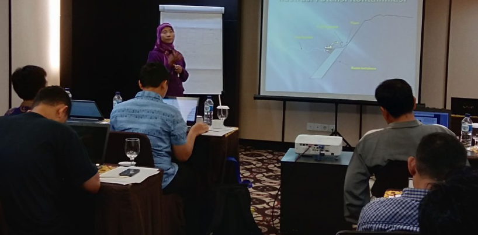

Training
PT GEOSERVICES is a limited company (Ltd.) that has a solid base of expertise covering all aspects of the exploration and development of Indonesia's oil, gas, coal, mineral, and geothermal industries. Originally providing field sampling and chemical analysis for the mineral industry, PT GEOSERVICES has diversified its services and broadened its clientele. Today it is a one-stop organization that can fulfill all exploration and analysis requirements for each of the industrial sectors it serves.
To provide better service throughout the archipelago, PT GEOSERVICES steadily expanded its operations from its originalBandung base, established in 1971. The company now has branch offices in Jakarta and Singapore as well as other key locations, including Samarinda (East Kalimantan), Balikpapan (East Kalimantan), Banjarbaru (South Kalimantan), and Pekanbaru (Riau).
PT GEOSERVICES internationally known for expertise and reliability in all areas of its activities. The growth of the company's size and reputation has been rooted in the excellence of its employees. The foundation for this excellence is a long-term commitment to the development of skills and knowledge, including off-shore training of local employees and interaction with expatriate consultants who relocate to Indonesia for varying periods of time.
To facilitate technology transfer PT GEOSERVICES enters into Joint Venture or Technical Assistance agreements with foreignbased companies that are recognized as leaders in their respective fields. The combination of experienced personnel, modern instrumentation, extensive staff training, and strict quality control procedures has gained PT GEOSERVICES worldwide acceptance. Dedication to maintaining these high standards in Indonesia ensures that the company's services will enjoy international recognition for many years to come.
To complete our services to Coal and Oil & Gas services, we are proudly to serve and to trained the man power with our several training that we held in several town with our best trainer (Local and Expatriate trainer).
We held about more than 1000 (for Coal & Oil courses) in Bandung, Jogjakarta, Surabaya, Malang, Bali, Lombok, Bukit Tinggi, Balikpapan, Banjarmasin & Samarinda.
Oil Course
Oil Courses:
- Rift Basins Petroleum System with Ombilin Basin as Case Study
- Well Stimulation
- Horizontal Drilling & Completion
- Practical Reserve Evaluations Using Reservoir Engineering Tools
- Hydrocarbon Reservoir Characterization & Evaluation Using Seismic Data
- Fundamental of Reservoir Engineering
- Well Test Analysis
- Petroleum Geochemistry for Petroleum Geoscientist
- Carbonate Petrophysics
- Petroleum Geology of Indonesia
- Petroleum System : from Sources Rocks to Reservoir
- Advance Seismic Attributes Analysis in Field Exploration & Development
- Reservoir Characterization
- Saturation Height Modeling and Capillarity in the rock using T.L. Software
- Advance Seismic Stratigraphy for Field Exploration & Development
- Reservoir Petrophysical Log Analysis
- Practical Reservoir Simulation
- Integrated Reservoir Characterization Using Seismic, Rock Physics and Petrophysics Data
- Seismic Monitoring for Effective Reservoir Development & Management
- Seismic Data Analysis for Interpreters
Coal Course
Coal Courses:
- Sampling, Preparation & Coal Analysis
- Coal Preparations Plant & Stockpile Management
- Coal Shipment & Report Writing
- Coal Quality & Quality Control
- Geology & Coal Exploration
- Good Exploration Practices & Coal Resources Estimation
- Coal Washing Plant
- Crushing Plant & Stockpile Management
- Estimated Resources & Mineral Reserve
- Quality of Coal & its effects towards utilization in Power Plant
- Problems of Coal Transportation at Sea